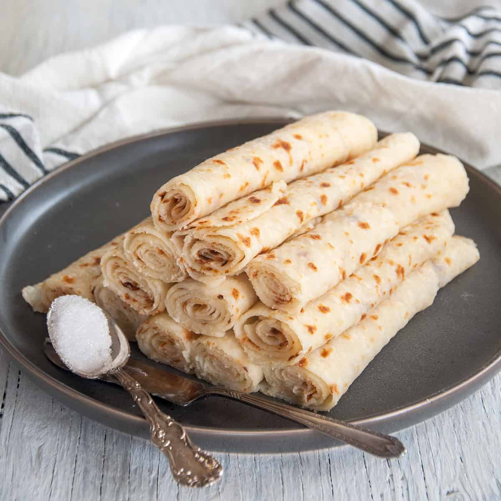

Lefsa Brod

How To Make Lefsa
Lefse is an iconic holiday food served on the tables of Norweigian Americans on Thanksgiving and worldwide on Christmas. This delicious potato bread is akin to a tortilla, but Scandinavian style. It is often served with toppings, such as butter, sugar, cinnamon, jellies, and even savory ingredients. If you are new to lefse or want to get close to your ancestral heritage, check out this Norwegian Lefse Recipe using real potatoes.
Ingredients
- 10 lbs tatos
- butter
- heavy cream
- salt
- white sugar
- all-purpose flour
Steps
- Cover potatoes with water and cook until tender. Run hot potatoes through a potato ricer. Place into a large bowl. Beat butter, cream, salt, and sugar into the hot riced potatoes. Let cool to room temperature.
- Stir flour into the potato mixture. Pull off pieces of the dough and form into walnut size balls. Lightly flour a pastry cloth and roll out lefse balls to 1/8 inch thickness.
- Cook on a hot (400 degree F/200 C) griddle until bubbles form and each side has browned. Place on a damp towel to cool slightly and then cover with damp towel until ready to serve.